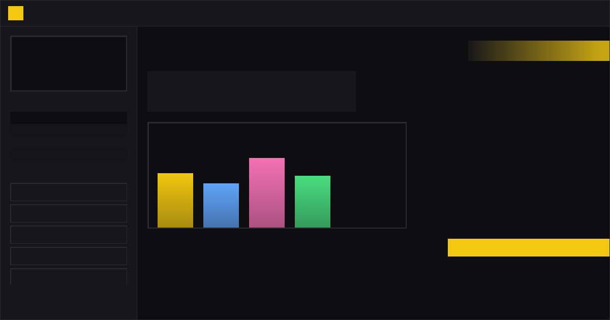
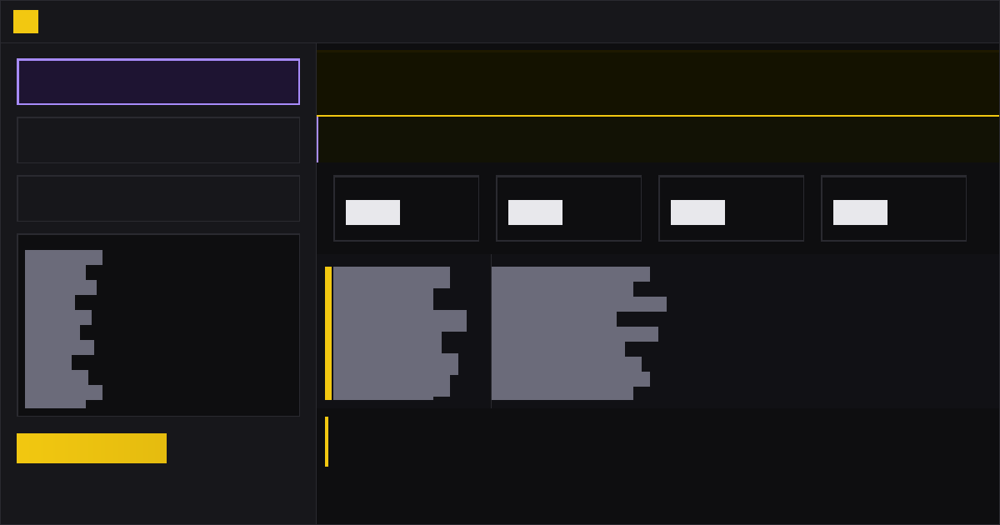

✦ IAExplorador de Datos con IA
Subí un CSV o Excel y hacé preguntas en español. La IA analiza, responde y genera gráficos automáticamente usando Claude.

Analista de Datos • Power BI • Python • HTML
Soy un Analista de Datos con un enfoque en la eficiencia y la innovación. Mi pasión es transformar la complejidad en soluciones ágiles y funcionales: me dedico a automatizar, simplificar procesos y extraer valor actionable de la información.
Para mí, los datos no son solo números, sino historias y oportunidades que impulsan la toma de decisiones.
Dominio Técnico: Trabajo con Python, Power BI, Excel avanzado y la plataforma Celonis (Process Mining).
Mentalidad: Soy un aprendiz constante. Busco la forma más inteligente y actualizada de generar un impacto medible.
Perfil Personal: Me defino como una persona curiosa, práctica y enfocada en las conexiones. Mi filosofía es que, aunque los datos son mi campo, lo más importante son las personas y los equipos que se crean en el camino.
Valores Clave: Curiosidad, Disciplina y Pragmatismo.
Intereses: Encuentro disciplina y enfoque en el boxeo, y disfruto del ciclismo urbano. Soy fanático del asado (dicen que me sale bastante bien), y comparto con mi pareja el gusto por el buen vino y las catas.
Conectemos. Estoy siempre abierto a nuevas oportunidades y a generar valor juntos. Hechale un vistazo a mi hoja de vida aquí
Los datos no son solo números; son oportunidades esperando ser descubiertas.

✦ IASubí un CSV o Excel y hacé preguntas en español. La IA analiza, responde y genera gráficos automáticamente usando Claude.

✦ IAPegás datos crudos y la IA genera un informe profesional con métricas, análisis, riesgos y recomendaciones, listo para presentar.
 Power BI
Power BI
Cruce automatizado de reportes entre ERPs. Reducción del 90% en errores de validación de facturas.
 Power BI
Power BI
Dashboard dinámico de performance operativa con seguimiento en tiempo real de indicadores clave.
 Excel VBA
Excel VBA
Automatización con VBA que cruza reportes de FTS, Almacén y Aduana eliminando errores en el cierre.
 Python
Python
Análisis de ventas por región y producto con Python. Visualizaciones que detectan patrones y apoyan decisiones estratégicas.
 Power BI
Power BI
Tablero Power BI que detecta discrepancias entre dos fuentes de facturas, con medidas DAX e indicadores visuales automáticos.
 Python
Python
API web con Flask y googletrans. Interfaz amigable que traduce texto entre múltiples idiomas via Google Translate.
¿Te gusta mi trabajo? ¡Deja tu feedback o un saludo aquí!